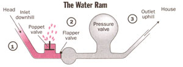

Country Skills
June/July 1995
The Secrets Of Low Tech Plumbing
How to get all the fresh water you need... almost anywhere.
By John Vivian
Take control of your water supply and wet-waste disposal systems with low-cost, low impact, low energy rain
catchments and cisterns, water rams, and solar pumps ... and a dose of plain old-fashoned water conservation.
Illustrations By Laurie Grace
Most of us move to the country in search of a simpler life that's closer to nature, less wasteful, and more self-reliant. We happily trade smog for clean coun try air, city conveniences for rural independence, TV dinners and jogging for home-baked bread and the honest sweat of gardening. An adventurous few go "off the grid" to supply their own electricity with solar panels, a wind generator, or minihydro. But only true modern pioneers choose to relinquish that central feature of modern living: unlimited running water and a flush-and-forget waste disposal system.
Which is a shame.
Much of the continent goes unpopulated because the soil won't "perk" sufficiently to absorb effluent from a 1,000-gallon septic system that's Building Code-approved to handle a modern household-or the land is too rocky or too remote for a well driller's rig. As a result, too many good folks are forced to abandon their country-living dream because money is so hard to put by in the consumerist rat race of urban life-including the $10,000 to $20,000 or more needed to install a citystyle water system in the country.
The greatest shame of all is that modern households don't really use the 30 to 100 gallons/person/day of water they consume. They pollute it-not out of necessity, but for mere convenience. Water is less the essence of life than a medium for wetwaste disposal.
An individual only needs a half gallon to a gallon of water a day to drink, cook, and wash up with. Laundry and bathing demands more, but not 40 gallons per drawn bath or automatic washer load. That monument to Victorian denial, the flush toilet, takes five to eight gallons per use to dispose of an ounce or two of waste per person per day, dry weight. Of the five gallons a minute little kids waste brushing their teeth (they always leave the tap on full, right?), only a brush-wetting and one mouth-rinse-a four-ounce paper cupful-is needed. Automatic clothes washers use 30 to 50 gallons a load to do what our greatgrandmothers accomplished in a gallon or two of water with a washtub, a bar of lye soap, a washboard, and elbow grease, or with a little more water and a wringer/washer. Showers waste 12 gallons (eight to 10 with a water-miser shower head); by contrast, when I was a Marine we were rationed a count of five to wet down and soap up, and a count of 10 to rinse off-using perhaps a gallon of water in all. In the field, we brushed our teeth from a canteen and bathed, shaved, and washed our socks in a helmet half-full of water.
I don't suggest that we live on a wartime basis (my buddies and I didn't much like it at the time) or that we go back to the washboard. But mini-flush toilets, lowflow shower heads, sewage-treatment plants, and our other feeble attempts at water conservation not-withstanding, plumbing systems are predicated on an unlimited supply of pure water and an environment with an unlimited capacity to absorb sewage. I'll not belabor the world's growing water shortages and waste-disposal problems but to suggest that divert ing a small river through every home to remove a smitter of waste indentures our water supply to an exaggerated fastidiousness. There is no reason but convenience to combine water-supply and waste-disposal systems. They should be separated in concept and practice, and water use reduced to a trickle with lowflow/low-tech plumbing. Water is to sustain life ...and to sail your boat over and to grow lovely tomatoes and to listen to as it flows over the rocks-not to insult.
Not For All
Hand-made low-flow, low-tech water systems aren't for everyone-not yet. They require rigorous conservation, replacing porcelain bathroom fixtures with privies and washtubs, and automated kitchen appliances with hand pumps and dishpans. These devices require time, attention, and labor-an inconvenience that some solid burghers I know disdain as pointlessly out of date, contemptuous of civility and good taste, and proof of a general societal decline into savagery and depravity. Savage it may be, but I prefer my spring water to what comes from the faucets in most cities, and would rather work up a sweat mucking out a spring or digging a cistern than riding around in a golf cart or straining at an Ab-Isolator.
Lo-tech water systems are probably best for a solitary bear like myself, for a young couple experimenting with life before mortgage payments and diapers take over, or for independent souls or vigorous retirees who don't have to appear freshly showered and well-creased, crisply shaved, or coiffed at some in-town office every morning. I can't see slogging to the outhouse through a yard of new snow wearing a Brooks Brothers suit. With time, the tough-minded ideas and gentle technologies we low-flow advocates are working to perfect will have their splintery seats and rustic lines smoothed, and will be interpreted in molded plastic to satisfy the pampered bottoms of urban sophisticates.
Lo-Flow Water = Low Low Land Price
A willingness to go lo-tech/lo-flow can manifest itself immediately in money saved on land. The well drillers have chased me off my mountain, and I've just located a place in downcast Maine where I can build a cabin and moor a boat without winning the lottery to pay for it. The price of seacoast is out-of-sight if it comes with a well-plumbed house or features "drilled well and septic." It is just slightly less if "perked, septic approved, electricity at road:" But if the land is solid granite, if saltwater has invaded the freshwater aquifer, or soil is too thin to absorb septic leachate, it's unsuitable for a conventional dwelling. The initial asking price may not reflect the impracticality or prohibitive cost of water service, but you can dicker it down. Then you can discount the cost of building an all-season road and electric lines. You get the idea. Taxes on unplumbed land are low too; replace the outhouse with a flusher and up they go. Look hard and bargain harder and a predilection for a lo-tech water system can get you dry (but otherwise prime) landcheap. And there's enough water most anywhere if you know how to get it.
Locating Water
All of North America (but genuine desert) receives 10 or more inches of rain-fall per year. If 80 percent is captured, each 10 inches of rain falling on a square foot of land produces five gallons of water a year Theoretically, in even the semi-arid Western mountains and plains, the runfrom the roof of a 18' x 24' cabin would produce 2,000 gallons/year. That's gallons per day; enough for one toilet flush-or enough to supply a small family living a water-conserving life all they re filly need plus water to spare for quick Towers and wash day. But that's if they reaped every rain shower and if it rained evenly throughout every year. It doesn't. The whole year's supply can come in a few impressive gulley-washers, and drought can persist for years.
Not even America's original low-tech water-system users could beat the natural water cycles. So please don't pack up the van and head off to New Mexico to homestead beside a blue line on a topo-map. The so-indicated river may not flow but twice a year-and then in flash floods. Of course, there may be a permanent river underneath the bed, but the water is liable to be undrinkable or so deep you couldn't reach it. 'Today, most folks intending to stay long in the arid parts of the country rely less on faith than on 150-foot deep-drilled well with solar pumps or windmills.
Rainfall accumulates and flows in-evitably downhill through a drainage system that ranges from surface level to 200 feet deep, and that is often invisible to the naked eye. Lo-tech systems are pretty much restricted to so-called ground water at the surface in streams and lakes, flowthrough permeable strata in the upper soil levels, or where deep water aquifer, rise to the surface in springs or marshes.
To prospect water from your easy chair, you can get nautical charts for the Great Lakes, major rivers, and sea coast from marine-supply outlets. Obtain in land topographical maps and hydrological surveys from any good outdoor sporting goods store, the local Cooperative Extension Service, or direct from U.S. Dept. of the Interior, Geological Survey, (800) 872-6277. The charts and maps indicate water channels down to small periodic streams, and the hydro stirveys chart sub-surface channels and aquifers. Maps don't tell the whole store, however. Much surface water is polluted by sewage, or by agricultural and indus trial chemicals. Some aquifers are near being pumped out, and the water table is dropping beyond lo-tech accessibility. Parts of the San Joaquin Valley of California have fallen 25 feet since pump ing "fossil water" from the aquifer beneath had started in the 1920s. That particular day of reckoning is not far off.
In the end, you can supply surface or shallow-well water to your place in three low-tech ways: 1. Catch it as it falls as rain; 2. Tap an uphill source and pipe it down by gravity; 3. Pump it up from a down- hill source.
Rain Catchments
My cabin site is a granite promontory high above a deep water bay of the Gulf o f Maine. The soil is a yard deep at most he fore it hits bedrock, and the nearest stream is a quarter mile away and 100 feet downhill.
For warm-weather water, I have ,I three-part plan. As I did in an earlier forest cabin, I'll attach wooden gutters along, the eaves and pipe the flow to a pair of iron-hooped wood-slat rain barrels set on the porch. The barrels, with mosquitoproof tight wooden covers and hand dippers, will be the first-stage water-supply system. Moss will grow around the barrel rims and once mosquitoes are gone I can leave the top ajar in the dryness of late summer. If you can't find old-time wooden barrels locally, hardware or home supply outlets sell them in several sizes-charred or plain, used or new. Use clean, recycled steel drums or plastic barrels (from any farm supply store) if you must, but the water won't taste the same.
PURIFYING WATER
There's not as much wild water that's "good enough to drink" as we used to think. Water flowing directly out of rock from an uninhabited hillside has a good chance of being pure. But even pristine mountain streams can contain natural human pathogens such as Salmonella, and Giardia-the parasite that causes Beaver Fever, a dysentery-like disease that is misnamed, since wildlife carriers got it from humans. Beware human habitation or farm livestock upstream or uphill of any water source. But even if you move to Georgian Bay or a Rocky Mountain fastness, have your water tested before you use it raw. States and provinces all offer water tests free or for a nominal fee. The local health board or any well driller or water softener will know where to go and how to take samples. Tests are usually done for E. coli, the bacterium that is normal in human stool. Request tests for everything else the lab can do-heavy metals, pesticides if in a farm area, worms, and other nasties.
Till you get a clean report-and for good if you don't-you can boil water, use chlorine pills, get a chlorinator or iodine infuser, or use a water filter. A backpacker's filter will do for small quantities. The Boundary Waters Catalog, at (800) 223-6565, carries a good variety costing from $30 to $150. For long-term use, solar stills or reverse-os mosis filters mentioned above are most effective, but cost from several hundred to several thousand dollars. One good source for reasonably priced stills is Crystal Clear at (914) 754-8696.
You might consider importing water. Look in the old-car magazines for a surplus military or industrial water trailer-a "camel"-and fill it in town for a few bucks. A lowflow household using only a few gallons a day can fill their needs with plastic jugs of spring water from the grocery for $1.00 a day, and much less if bought in bulk.
Hand-built water systems are never finished, of course, which is part of the fun. Another idea my son Sam and I are working on is to make our own camel from a 1,200 lb. GVW dual snowmobile/dirt bike trailer. It will hold three full 55-gallon steel drums. I'll equip it with a long siphon hose or a little gas-powered transfer pump and get wild water from a tested spring. Let's see, Harley doesn't drink much and 150 gallons will supply our low-tee/lo-flow requirements for four or five months ...more like a month or two when we have visitors. I could build an insulated shed on the cabin big enough to hold several drums over winter ...and rig a solar fan to blow wood heat in to keep the water from freezing. Over the centuries many have solved the purification problem by drinking only hot-brewed coffee and fermented spirits. I tried that myself, but eventually found it counterproductive to the clean living and clearthinking rationale that brought me to the country in the first place, and can't recommend it.
After a summer on the place, I'll know how much rain to expect and how much I'll use and will go to the second stage: setting reconditioned 30-gallon steel drums up on the rafters for a gravity water system. One will be rigged to a hot water exchanger (for $200 ready-made, or homemade from scrap copper tubing) that heats via natural convective circulation. If the south side of the cabin gets a good eight hours of sunlight, I'll set a black-painted 30-gallon steel-drum hot water tank outside on a high stand outside the bathroom (perhaps mated with the exchanger in the wood stove) for the often necessary luxury of warm showers. Like all homemade lotech water heaters, it will take a lot of soldering, valving, and experimentation.
The final step will be to hire a backhoe to dig a 500-gallon cistern under the house's kitchen/bathroom plumbing tier to supply a good four-month lo-flow winter water supply. The eaves will empty into it, and a manual valving system will direct water to the cistern, a roof-cleaning bypass/ overflow. An insulated (perhaps heat-tape warmed) pipe will run from the cistern to a hand pump at the kitchen sink (see page 34) or I could use a small 12VDC solarelectric pump to fill gravity tanks in the roof. I may have to blast to dig the cistern and may have to line it with stout plastic sheeting for water tightness. We'll see. downcast Maine receives 50 inches of rain per year-about 1,000 gal/month from a 400-square-foot roof, so there's no concern about going dry.
Go Tap a Spring
Water flows under most of the continent through gravel and sand layers (strata) deposited eons ago, often capped top and bottom by impermeable clay strata sometimes flowing for hundreds of miles from 50 to 200 feet down. It springs to light in dips or where water-bearing strata or fissures in the rocks just naturally break the surface. Look for green spots in the woods or for willow lines on the plains. Follow gulleys that betray faults or underground streams. Track deer downhill from their night beds on the ridge tops to where they water every morning in the draws.
Ideally, you will find a piece of land that slopes up behind the house to a flowing spring. You can just dip one end of a hose in a little pool, run it to the house, put a spigot on the end, fill the tube from the top, and siphon water down. If the spring flows strong enough, install a pipe and let it run full-time. Best is to locate a dip that has filled up with black muck over the centuries and dig it out (dam the flow uphill and divert it temporarily if need be). You can sink rocks or concrete blocks to anchor a screened foot valve in the bottom. The valve will keep trash out and guarantee one-way-only flow, but the hole fills in quickly. Longerlasting is a yard-square covered spring box-a crib of stout poles, or a caisson of wood planks (that will last for years if kept saturated), rock, or poured concrete. Run a pipe out the side and down to the house. Cover the box well to keep leaves and other woodsy trash out.
Mucking out a spring is the only work I enjoy more than building stone walls. The muck stinks; it's full of bugs and slimy rocks and buried limbs that spring up, splattering you with black goop. But when it's done and the swirls of mud gradually clear, you've presented the forest with a new pool of clean, clear water never sampled by man or beast. I like to make small waterfalls at the top and bottom just to hear the sound.
Tapping Lakes, Streams, and Rivers
The main problem I've incurred in tapping natural water bodies is keeping the inlet pipe stable against wave action and changing currents, free of silt and waterborne trash, and firmly sunk below changing water levels. The best solution I know is to make an inlet box to hold a foot valve or strainer. Often a single concrete block will do. You may have to get so elaborate as to dig a pit in the bottom and halfsubmerge a wooden box and hold it in place by filling with river stones (see page 34). Fashioning the inlet from plastic plumbing pipe fixtures to make a "T" or a rigid crook with the opening facing away from prevailing current often helps to give it purchase, remain above bottom silt, and reject floating leaves and trash (see page H2). Rigid PVC pipe used to fabricate drains and junctions comes in a variety of shapes and can be welded easily with solvent. In some situations, a floating inlet is best-with the tubing suspended from a plastic-foam float anchored to the bottom.
If water is silty or choked with weeds or algae-sometimes, even if it is stagnant and foul-you can employ an old woodsman's trick and dig a sump beside it, about a foot away in sandy soil, half that in denser soil. Water will filter through, cleaning itself as it fills the sump to the level of the water body. The sump can be quite deep, so long as the dike separating sump from pond or stream holds. Sapling poles and stakes or steel mesh and re-bar used for reinforcing concrete can be hammered or laid around the sides to strengthen the sump. A cover is necessary to keep out trash. I have used a plastic tarp held up with poles, margins weighted with stones and the sheet punched through several places to allow rainwater to seep through. For a permanent sump cover, build a wood, poured-concrete, or concrete-block frame around the top and fashion a hinged or removable wooden top as when making a spring box.
If your water source is below the house, you'll want to pump the water up. If you're lucky enough to live beside a stream in hill country, and the waterway drops two to 50 feet over a relatively short distance, you can use a water ram. This elegantly simple device uses gravity expressed in the momentum of a falling water column to pump water uphill. A relatively small amount of water from a flowing stream is diverted into a catch basin, then to a pipe and downhill. In the ram, its momentum is captured between a pair of oppositeworking valves with a closed-top pressure vessel (metal bulb or plastic tube) between them. Momentum-forced water enters the vessel, compressing the air, the inlet-side valve closes, trapping energized water, compressed air in the vessel expands, forcing a jet of water past the outlet-side valve which closes when the water spurts past and recoils back against it. But most of the energized water is trapped ahead of the valve, so up goes your water supply in successive spurts.
The secret to a water ram is the amount of "head" the stream offers, a term refer ring to the difference in depth of a liquid at two given points and to the higher pressure at the lower point.
Since it plummets straight down for 167 feet., Niagara Falls develops 167 feet of head over a negligible amount of forward progress. With its one-foot-per-mile fall rate, the Mississippi needs 167 miles to develop the same head.
The inlet can be as little as two feet higher than the outlet, but the more head, the more water can be moved. The best way to get enough head to lift water a meaningful height (the "rise") over a reasonable overland distance is to pick a site with a vigorous mountain stream running just downhill from your place.
HAND-DRILLED WELLS
I've never dug a real well, and don't suggest your doing it. But if you are restoring an old farmstead, do scout around for the old wells. One for the house and another for the barn are bound to be there someplace-hidden under a flat rock in the yard, on the machine-shed side of the barn away from the stock pens, or under the porch. Many were filled, broken in, or capped with concrete for cat/dog/little kid safety's sake after a deep well was drilled, but they'll still produce water in sufficient quantity for a lo-flow system. Many homes from the 1800s were built over springs, so it might be worth your while to listen for a faint burble underneath the floor boards. If it's there, you'll hear it, even under a concrete floor. If you strike it rich, sink a pipe and attach a hand pump.
As with nearly all ground water, old wells need testing. And expect the water level to fluctuate with the seasons. My kids were whelped on a cellar well that got low enough one fall to force a reluctant shift from cloth diapers to disposable for a few weeks. (I'm told that modern-day disposable are less of a burden on the environment than the combined water use and detergent contamination from laundering cloth diapers. My youngest is in college, however, and I have no present inclination to test the theory by going back into the diaper business.
Don't expect to bring up water by hammering down one of the those strainer ended hollow-pipe well points you see in catalogs unless neighbors's wells or a hydrologic survey confirms presence of a clean, shallow aquifer that remains fully charged year-round. Only if the free water level is no more than 20 feet below the surface, and the ground is rock-free and easily penetrable down to water, can a hand-sunk point get to it. Sandy soils near large fresh-water bodies are best, and the nearer lake level the well mouth the better; hand pumping from much more than 10 feet down takes a lot of muscle.
Those gas-engined post-hole diggers cobbled up with mini-water-well drills and advertised to bring water up from "deep-rock" wells ...won't. I've seen excited buyers bouncing the foolish things around, trying to get the auger to bite. When it did, and jammed hard on the first buried rock, the powerhead twisted out of their hands and stalled, sometimes inflicting a modicum of injury in the process. These rigs have a water inlet under the engine; you are supposed to hook up a water hose that sends pressurized water down the pipe drill stem to force up the cuttings. If there's water available to drill, why are you drilling? The drillers supply theirs from a tank truck as big as a swimming pool.
If soil is sandy and rock-free far enough down for a several-hundred-dollar gas-powered drill to work, so will a $50 well point and $20 drilling cap and a few dollars of plumbing pipe and junctions-hand driven in an afternoon with a sledge.
The chart above gives output up 100 feet of rise for a one-inch-ID bronze ram at several head figures. At least four gallons/minute of flow are needed to operate a one-inch ram.
Rams come in several sizes and in PC: plumbing pipe as well as metal. A top-quality one-inch metal ram costs $500. A build-it-yourself kit of instructions and the only two moving components for a one-inch plastic ram costs less than $50, or you can get one ready to pump for under $100. To the cost of your ram, you must add cost of pipe from the inlet down to the ram, and back up hill to your home, barn or stock-watering tank.
You will find details in the catalogs. If you are seriously interested in the less expensive water rams, you can go to the source and request a catalog from The Ram Co., (800) 227-8511. The Cumberland General Store sells metal rams in its $3.00 catalog, (800) 334-4640.
More than any device I know, a water ram represents that rare thing-a perfectly clean, purely beneficial technology. Rig it to fill overhead tanks for a gravitypowered pressure system. Then, with woodstove or sun-heated hot water, and piping your cooking and shower water out to irrigate the garden, you'll have a water system that is environmentally benign.
Another environmentally neutral option-more "appropriate-tech" than low-tech-is one of the solar-powered pumps that are replacing windmills at many stock tanks in the West. Best for sunny climates, although all solar panels lose efficiency in high heat, they function 40 percent more efficiently in summer if mounted on a solar-activated sun-tracker.
Deep-well rigs use a pair of $200 to $300 photo-voltaic panels and a $500 submergible jet pump to move 100 gallons/hour up a 25-foot head (25 feet straight up or hundreds of feet of dis tance). Or, they will move some 50 GPH against a 200-foot head. Plan to spend $1,500 to $2,000 for the panels, mount, battery, pump, and controller. A solar tracker adds another $500. Piping, foot valves, and strainers must be chosen to fit the use, and cost extra, but not a lot. Submersible pumps are designed to go down inside the casing of a drilled well, but can be adapted for shallow water sources where the head is great.
For pulling lesser quantities of water up from shallow wells, cisterns, and lakes, you can power a $50 to $150 multi-piston diaphragm pump with one solar panel on a simple frame, $15 worth of fittings, and hose as needed. They can pump three or four gallons a minute up to 60 feet above the pump, and can pressurize your home water system to boot. Diaphragms wear out, but are easy to replace.
Getting in low-tech water during the hard winters we have in snow country is a challenge. Exposed water rams, intermittent pumps, and pipes will freeze solid, and only if the above-ground appliances are frost-proofed will a shallow well or cistern produce all winter. If the source remains open all winter, you can build a well-insulated well house over ram or pump and bury supply pipes below the frost line. With 110 VAC electricity or a high-output alternative electricity you can install heaters or heat tapes to keep the system thawed.
Fast-moving water won't freeze, though, and a constant flow can be maintained through insulated pipes from below the surface of a stream or lake. You need an outflow for the surplus (and for gray water), though, or you'll have a glacier built up by April. Best is a flowing spring in the cellar-which requires foresight in locating your dwelling.
Desalinators
Of course, snow won't flow off my cabin roof, and I may try using sea water. Modern passive technology offers two ways to use sea brine-or any water that is foul, alkaline, or even polluted. Solar stills ranging in output from a half-gallon to two gallons/day will evaporate pure water out from foul or saltwater, but need sun all day, so are most efficient in the lower latitudes. Prices range from $350 to $800 for the nearly indestructible, freeze-proof flat-plate stills. A sun-activated automatic feeder will add $200 and a special reservoir another $300 to $750. Along with other off the-grid systems, stocked by Kansas Wind Power, 13569 214th Road, Holton KS 66436-8138.
Marine desalinators use reverse-osmosis to remove 98 percent of all impurities from one to eight gallons/hour of salt or contaminated water. They come in manual and 12VDC power versions at a price of $500 to $1,700. You must spend the better part of $100 to replace the membrane periodically. I'd get one for the life raft on my boat before I take it offshore, and will ask it to do double duty if my son Sam and I can figure out a way to rig a water ram to use wave and tide energy to pump salt water up to the cabin for winter. The fresh water in sea brine doesn't freeze to slush or sea ice if kept agitated.
The ram may not cooperate, but Old Dog Harley and I have melted snow on the wood stove through more winters than one. We came through with both our coats a bit on the gamy side, but otherwise in fine shape. I'll admit, however that when life falls (or maybe it rises?) to that lo-tech level, just keeping body and soul together becomes a full-time job.
The Noble Earth Closet
Properly managed, an outhouse recycles human waste perfectly, converting it directly into soil nutrients with no fossil fuel, no water pollution, and a net positive effect on the environment. An outhouse is even better for the user's psyche. It's humbling when we can't flush away the daily reminder that we're not all that superior to the family dog, who performs natural functions without the modesty and inhibition, guilt or shame that we experience.
Health codes in most rural areas of the country fail to address earth closets, or are tolerant if they do. But privies are sitting targets for a certain brand of newcomer from town who feel it a right and duty to raise the cultural level of the locals. In Vermont, yuppies have infested the mountains with ski resorts that suck the aquifers dry to make snow and with condos that refill them with septic effluent. In Maine, they've ringed crystalline glacial ponds, once sparsely populated by the locals's privyequipped fishing shacks, with hipto-hip upscale cottages whose hip-to-hip septics emit phosphors that nourish weeds that turn pristine trout waters into frog swamps. And durned if Clean-Green do-good ers in both states aren't ignoring the problems they've brought with them, and are cooking up legislation to regulate the privies that are all the plumbing that many older country folks have ever known and all that back-country poor can afford.
Be sure to check the law before you dig. No, check before you so much as consider buying a place. Any rural municipality that sends the privy police around is liable to zone privies out of town and won't tolerate lo-tech/lo-flow water systems or interesting people for long.
Locate your privy out of sight of snoopers of all persuasions, well downshed from any open water and from the source of your own water supply-almost always downhill. To assay drainage, wait for a good rain to soak in. Dig a three-footdeep post hole with sharply cut sides; the upflow side will seep water most persistently.
Old-time wisdom says to locate an outhouse at least 60 feet from your water source-100 feet in sandy, fast-percolating soil. Over that distance, soil microbes will purify any effluent that escapes the pit. Dig into an old pit sometime. Inside will be rich compost. Around the perimeter you'll see a dark rind of super-rich soil that was once full of anaerobic microbes that purified the effluent before it got more than a few inches out into the soil.
Pit and well can be closer if separated by an impermeable barrier-say, by a bedrock outcropping or a house foundation. I lived in a place once where the 100-year-old cesspool and shallow well were only 15 feet apart-separated by the cellar hole and walls. There was never a problem.
Build your privy according to whim or from one of the books available from alternative-lifestyle publishers. Be sure to make all seams bug-proof and bank spoil from the pit inside and out, around the sides, and stomp well to keep odors in and critters out.
Install storm-sash gasketing so the seats are airtight. Drill vent holes in front panel under the seat at floor level and cover with fine-mesh screening. Install a black-painted vent tube (stovepipe or a long wood box) leading from the back of the seat to a yard above the roof against a white-painted rear wall facing the sun. It will evacuate odor by passive convection and aerate the pit for faster, aerobic, less pungent composting. A wind turbine or solar fan will vent even more effectively. A little 12VDC muffin fan and a small solar panel cost about $100 and work when the sun shines-or with a larger solar panel, a controller, and a battery, will run full time and supply a privy light if you want it. A wind turbine used with commercial non-electric composting toilets costs about 30 bucks and runs when the wind blows. See the solar-goods catalogs that advertise in MOTHER.
Dig your pit as deep as you can manage, but not down to standing water. If you can't get down four feet without hitting water, dig shallow and rig carrying poles on each side of the house so two people can move the house several times a year.
My next privy will be a deluxe model featuring a solar fan with a large solar panel and battery to power a night-light and a quick-heating propane-fueled catalytic heater for four-season comfort. Sears no longer publishes their catalog so I'll supply biodegradable toilet paper sold for chemical toilets. Its more expensive than Charmin, but decomposes quickly. A bookshelf, battery-powered radio, and a container of wetwipe disposable hand cleansers completes the furnishings.
The one aspect of privy management that can't be automated or euphemized away is stirring. Hinge the seat and keep a large stick down in the hole where you can reach the good end. Whenever you can muster the strength, stir and spread the contents. Remember, humility is a virtue.
In most soils, a 3' x 3' x 5' deep pit should serve a small household for a year without problem. Many seasonal or limiteduse outhouses have served from the same location for decades. But, if the pit threatens to fill or become unpleasant from heavy use, dig another one uphill and to one side and move the house. Fill in the old pit and plant a lilac bush over the spot. Late fall is the best time so you'll have plenty of pit space for winter.
For best composting, keep a coffee can and a large container of dry soil, peat moss, pine needles or other organic material by the seat and instruct all users to drop in a half-container full with each use. If space to relocate the privy is limited, or you experience brief heavy usage from visitors, you can scatter quick-lime or caustic soda in the pit every day. It will keep odors down and speed disintegration.
To minimize insect problems, be sure to screen all openings, fashion a good tight door with a closing spring, and keep the toilet lid down and bug-tight. And don't throw garden refuse or kitchen garbage into the pit. You don't want to introduce eggs that will encourage fruit flies.
Of course, you'll not want to run to the outhouse at all hours. Get some old-time chamber pots-ample crocks cast from easily cleaned gloss-glazed porcelain. With or without a bit of rose water in the bottom and covered discreetly with a towel, they are a perfectly civilized alternative to a midnight stroll to the facilities.
Waterless Indoor Plumbing
Composting toilets are indoor versions of the earth closet, but are carefully designed to turn human waste, kitchen scraps and peat moss into bug- and eggkilling, human-pathogen disinfecting, hotprocess compost. They come with or without elec tric heat and vent fans to improve both capacity and process, and incorporate internal agitating mechanisms to keep true aerobic compost cooking. Silent, sanitary, aesthetic, waterless, and fully Code Acceptable in a growing number of rural municipalities, they cost about $1,000. You'll agree they're worth it the first time you don't have to mush to the outhouse in a cold rain. The best are made in Canada. See the catalogs and ads in MOTHER.
Composting toilets, DC batteries for a solar array, and the water supply need to be kept warm in winter. When I get up the money to luxuriate in off-the-grid decadence and luxury, I will buy a propanepowered refrigerator and ondemand water heater and install them in the kitchen counter that backs against the bathroom wall. Their warm exhaust will do double duty, venting through finned stove pipe run through a Code-acceptable sealed battery locker, into and through the toilet space, and between gravity-water tanks packed in insulation up in the ceiling.
Graywater
Small amounts of cooking and wash water-"graywater"-can just be tossed on the lawn or garden. If the outflow becomes noticeable, it's both unaesthetic and illegal in most places, so it should be run into a sump or dry well, a leach pit, or set of each lines. A sump for a single-sink outflow need be nothing but a hole in the ground with a flat rock over it and the drain hose leading in. A dry well is larger, to accept water from a shower and sink. One version is a yarddeep hole lined with a planks set on end and half-filled with gravel or crushed rock and the end of the drain pipe sunk halfway down. A proper leach pit can be as large as needed to serve laundry, sinks, shower or bathtub. Build a yard-wide cylinder of concrete blocks with a foot of gravel at the bottom and six inches all around; lay the drain line underground and cover the pit with planks. Or, cover with a concrete cistern cap and cover that with sod and never worry about it unless it overflowswhich means it needs to be dug out or moved.
Maybe it's the Red Indian in me, but I find more than fluid nourishment in a handbuilt water system ...living life not as a consumer but as an active participant in the sun-powered water cycle.
THE NOBLE EARTH CLOSET
Properly managed, an outhouse recycles perfectly, converting waste directly into nutrients.
 At start, poppet is open and one-way valve is closed. Water flows down inlet pipe and up through poppet-valve overflow. |
Poppet closes, containing the full momentum of the falling water column inside the pump. The ""Ram Effect"" forces the one-way valve to open. Water gushes past it, compressing air in pressure valve. |
 One-way closes trapping the water just rammed past it. Compressed air on vessel expands, forcing a small amount of water up-hill. Poppet opens and process begins a new. |
|
|
|
|
|
|
|
|